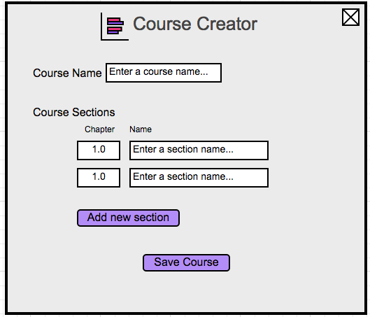

This scenario shows an individual instructor creating a new course, which serves as a collection of question types for the instructor to select from when creating a test. We assume that the instructor is using the Test Tool from scratch besides creating an account and logging in, which is detailed in Section 1.
Figure 1: Courses Initial View

Figure 2: Creating A Course Initial View
The instructor selects each textbox and fills in the appropriate information for their course's sections. To add another section, the instructor hits the Create new section button, whereupon the system responds by adding another textbox for a chapter and name under the Course Sections list. A filled-out view of a course is displayed in Figure 3.
Figure 3: A Filled Out Course
To the right of the section names are edit buttons. When the instructor presses the edit button, the Section Creation window appears, as shown in Figure 4 of the next section. For now, we assume that the instructor finished creating the course, which looks like the window shown in Figure 7.
Figure 7: Courses Filled View
The Last Modified field in the Courses list shows when the instructor last modified that course.
When the instructor presses the Delete course button, the system displays the window shown in Figure 8.
Figure 8: Deleting A Course
If the instructor hits the Edit course button, the window shown in Figure 3 is displayed again for the
instructor to make changes.